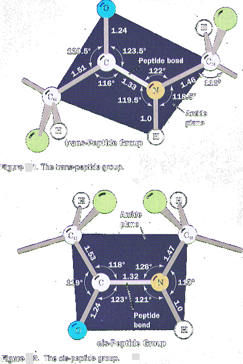

Secondary Structure
The secondary structure of proteins is defined as the localized folding patterns of the polypeptide chain such as helices, sheets, and turns.
The Planar Peptide Group Limits Polypeptide Conformations
Recall that a polypeptide is a polymer of amino acid residues linked by amide (peptide) bonds. In the 1930s and 1940s, Linus Pauling and Robert Corey determined the X-ray structures of several amino acids and dipeptides in an effort to elucidate the conformational constraints on a polypeptide chain. These studies indicated that the peptide group has a rigid, planar structure as a consequence of resonance interactions that give the peptide bond ∼40% double-bond character:
This explanation is supported by the observations that a peptide group’s C−N bond is 0.13 Å shorter than its N−Cα single bond and that its C=O bond is 0.02 Å longer than that of aldehydes and ketones. The planar conformation maximizes π-bonding overlap, which accounts for the peptide group’s rigidity. As a consequence of this resonance, the peptide group has a rigid, planar structure, i.e., atoms between two Cα atoms (C, O, N and H) are approximately co-planar. This rigidity of the peptide bond reduces the degrees of freedom of the polypeptide during folding. One can visualize the polypeptide chains consisting of rigid planes of peptide units interconnected by Cα atoms of each amino acid residue.
Peptide groups, with few exceptions, assume the trans conformation, in which successive Cα atoms are on opposite sides of the peptide bond joining them (Figg. 1). The cis conformation, in which successive Cα atoms are on the same side of the peptide bond, is ∼8 kJ ∙ mol−1 less stable than the trans conformation because of steric interference between neighboring side chains. However, this steric interference is reduced in peptide bonds to Pro residues, so ∼10% of the Pro residues in proteins follow a cis peptide bond.
Torsion angles
Movement in the polypeptide chain is possible only by rotation in the bond angles of Cα-NH- and Cα-CO. The angles are called the torsion angles. There are three main chain torsion angles of a polypeptide chain. These angles, 𝛟 and 𝛙, are both defined as 180° when the polypeptide chain is in its fully extended conformation and increase clockwise when viewed from Cα. The conformational freedom, and therefore the torsion angles of a polypeptide backbone, are sterically constrained. Rotation around the Cα-N and Cα-C bonds to form certain combinations of ϕ and ψ angles will cause the amide hydrogen, the carbonyl oxygen, or the substituents of Cα of adjacent residues to collide (e.g., Fig. 6-5). Certain conformations of longer polypeptides can similarly produce collisions between residues that are far apart in sequence. The Ramachandran Diagram Indicates Allowed Conformations of olypeptides. The sterically allowed values of ϕ and ψ can be calculated. Sterically forbidden conformations, such as the one shown in Fig. 6-5, have ϕ and ψ values that would bring atoms closer than the corresponding van der Waals distance (the distance of closest contact between nonbonded atoms). Such information is summarized in a Ramachandran diagram (Fig. 6-6), which is named after its inventor, G. N. Ramachandran.
Most areas of the Ramachandran diagram (most combinations of ϕ and ψ) represent forbidden conformations of a polypeptide chain. Only three small regions of the diagram are physically accessible to most residues. The observed ϕ and ψ values of accurately determined structures nearly always fall within these allowed regions of the Ramachandran plot. There are, however, some notable exceptions:
The cyclic side chain of Pro limits its range of ϕ values to angles of around −60°, making it, not surprisingly, the most conformationally restricted amino acid residue.
Gly, the only residue without a Cβ atom, is much less sterically hindered than the other amino acid residues. Hence, its permissible range of ϕ and ψ covers a larger area of the Ramachandran diagram. At Gly residues, polypeptide chains often assume conformations that are forbidden to other residues.